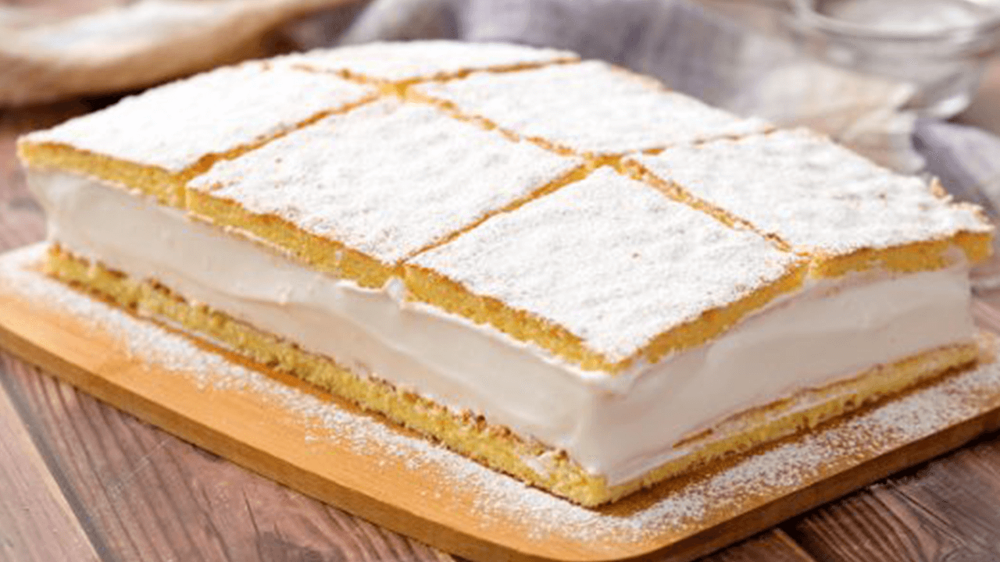

APPETIZER
light pastries
as a starter

BREAKFAST
bosnian traditional breakfast
with smoked meal
SOUP
bosnian traditional soup
"BEGOVA ČORBA"

PITA
pita made of thin dough with spinach
"PITA ZELJANICA"

MEAT DISHES
roasted on charcoal with cream
ĊEVAPI

PASTRIES
bosnian cake made of fine whipped cream
ŠAMPITA

DRINKS
traditional bosnian coffee
"BOSANSKA KAFA"
DRINKS
famous orange juice
"ORGINAL ORANGINA"

DRINKS
famous Elderflower juice
"SOK OD ZOVE"